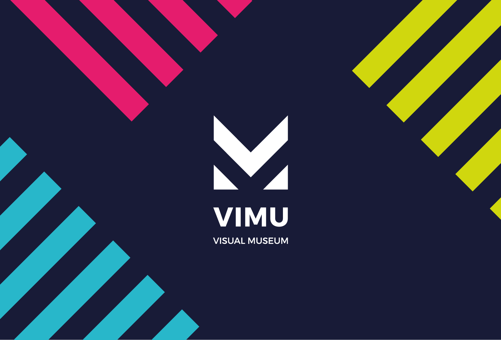
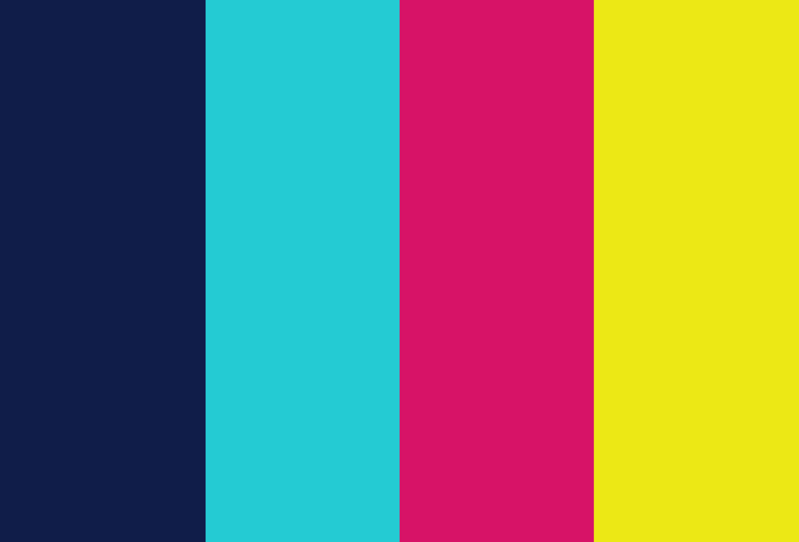
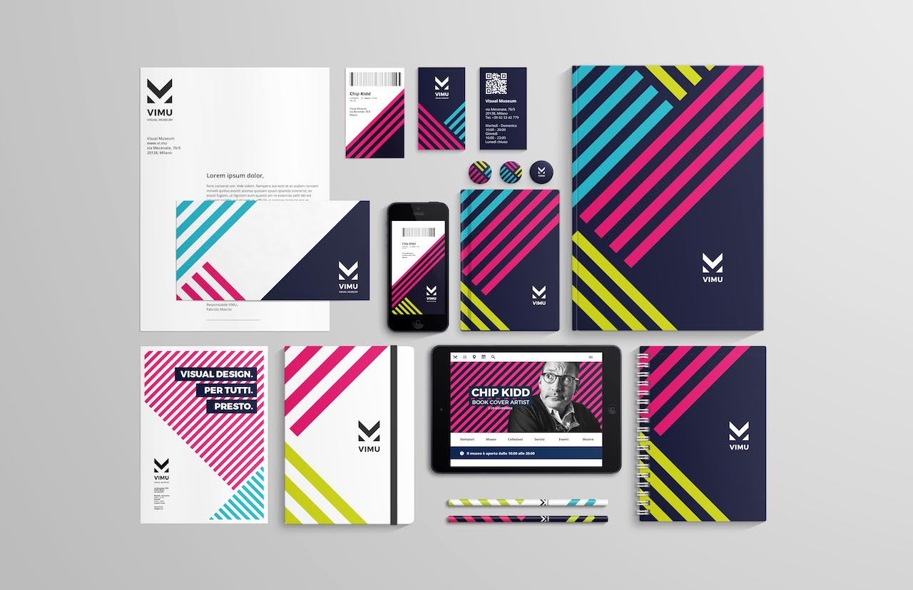
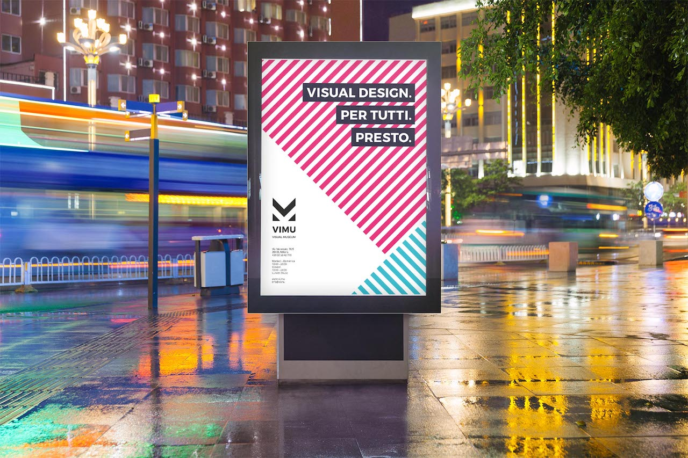
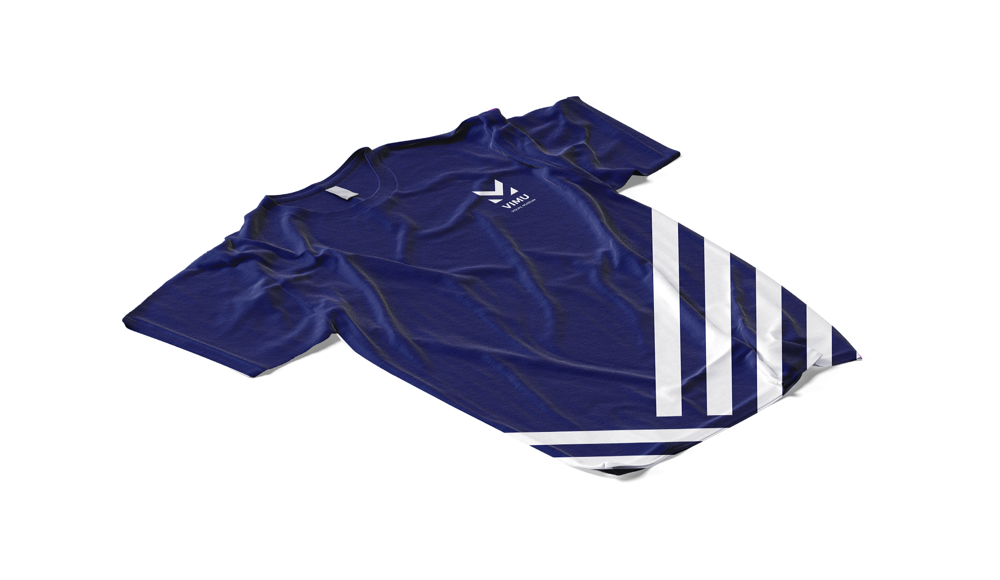
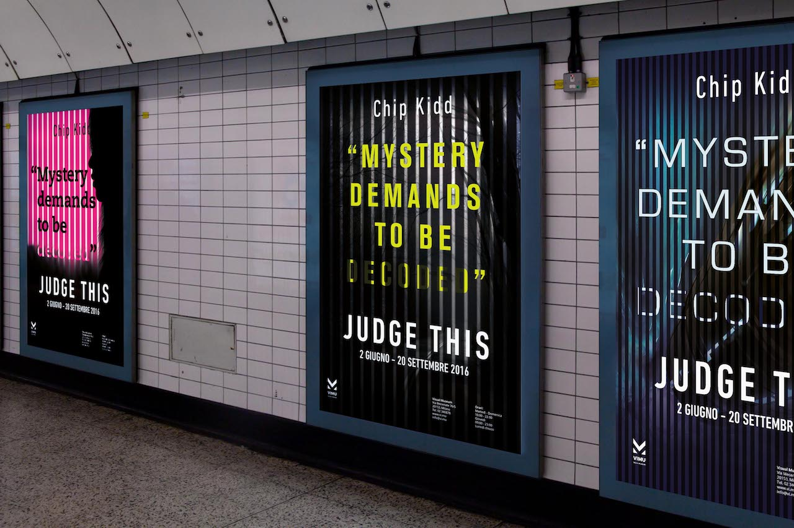
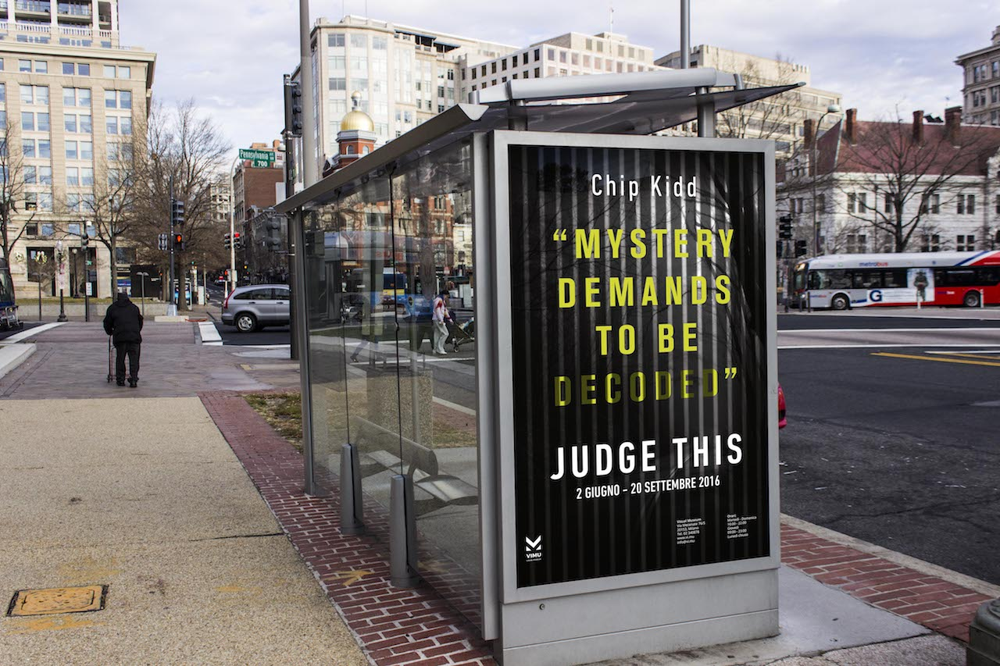

A group of five people had to design the brand image for a university project (Laboratorio di Progetto della Comunicazione).
The client would be a newly founded museum of graphic design (the group was assigned the name 'Visual Museum').
The project is tailored for an interactive, dynamic museum.

Concept —
VIMU (Visual Museum) is a newly born, interactive, and dynamic museum. Taking this as a start point, its branding and brand image were conceived following these two values: the logo was created using oblique lines, which give a sense of dynamic, of movement. The font used for the logotype is Montserrat Bold.

Colours —
The chromatic palette has been designed to return maximum vibrance and make the logo perception even more dynamic.
By combining the different colours, it is possible to create great contrast and keep good chromatic harmony.

Branding —
VIMU's branding has been relatively difficult, since there were many proposals about the key visuals at the beginning, and it was difficult to find a consistent way to visually represent the brand's values. The result of this has been a system of oblique lines (which recall the logo elements) that is present through all the products: block‑notes, pencils, pins, business cards, tickets, letterhead and posters.



Chip Kidd —
Another task of the project was to design and curate an exhibition for a famous designer that we liked.
Our choice was Chip Kidd, as he is one of the most creative designers around since many years and his works are famous even without his name on it. The challenge here was to capture the artist's key elements and approach to design, in order to use them for the exhibition's communication. Chip Kidd's famous book covers always have a sense of mystery, as the reader gets the full meaning of them only when he/she has fully read and understood the book. As he himself said during one of his speeches: "Mystery demands to be decoded".



Website —
The website of the museum is the output of a User Experience study. It was designed by following a simple principle: immediacy. It features three key elements: the header, which immediately shows the main events that are happening and the opening hours of the current day; the social dashboard, which engages the user through the various social networks and lets him/her discover the many design pieces which are exhibited; the menu, through which it's possible to reach every part of the website, with just a click; ViBot, the ovvicial VIMU bot, which lets users make reservations (museum or restaurant cafe), or buy gifts from the book shop.


App —
The main purpose of the mobile app was to extend the in‑museum experience.
For this reason, the mobile app checks the user's position when launched. If the user is inside the museum, the interface adapts itself to let him/her interact with the museum's main exhibition on Art Direction in videogames (hence why the gamepad appears on screen); if then the user is outside, the app itself becomes capable of giving directions to the museum, info about the exhibitions.